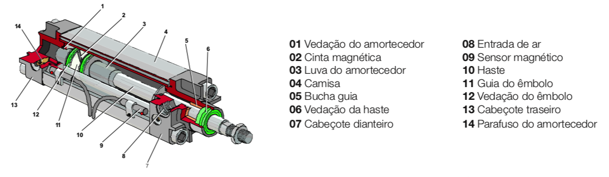
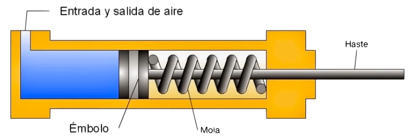

Atuadores Pneumáticos

Objetivo principal: Convertem energia pneumática em trabalho mecânico.
Atuadores pneumáticos são dispositivos simples, de baixo custo e fáceis de instalar que proporcionam força e movimento para sistemas automatizados, máquinas e processos. Podem ser tanto lineares como rotativos.
O curso de um atuador pode ser bloqueado sem danos e determina o movimento linear máximo que ele pode produzir enquanto seu diâmetro determina a força máxima que pode exercer. Sua velocidade pode ser ajustada em uma ampla faixa. Sua força é controlada através de um regulador de pressão e sua máxima de trabalho depende do projeto do atuador. Atuadores padrão VDMA trabalham com até 16 bar.
Condições adversas são toleradas, como por exemplo: umidade, ambientes secos e com poeira, e limpeza por jatos d’água.
Os atuadores pneumáticos são fabricados em uma ampla variedade de tamanhos, estilos e tipos que incluem simples ação, dupla ação, amortecimento fixo ou ajustável, com ou sem armotecimento, com êmbolo magnético, atuadores sem haste, atuador rotativo, atuador de fixação e atuador tipo fole.
Atuadores Lineares
Tipos:
- Cilindros de ação (efeito) simples;
- Cilindros de dupla ação.
Cilindro de efeito simples
Possui apenas 1 orifício (conexão) por onde entra e sai o ar.
O retorno à posição original pode ser realizado pela própria carga, efeitos de gravidade ou por uma mola (como mostrado na figura abaixo):

Símbolo:
A força disponibilizada é um pouco menor que a expressão:
Pois deve-se considerar a força de oposição que exerce a mola.
Cilindro de efeito duplo
Possui 2 orifíficos por onde entra ou sai o ar.
É ativado usando-se válvulas 4/2, 5/2 e 5/3.
Tipos:
Vantagens de cada cilindro
| Simples efeito | Critério | Duplo efeito |
|---|---|---|
| Consumo de ar | ||
| Força | pq não possui a mola interna que gera uma força de oposição ao movimento. | |
| Distância Percorrida | pq não possui a mola interna. | |
| Trabalho | Gera + força e pode trabalhar em ambos os sentidos. |
Observações: Cilindros de Dupla ação com amortecedor:
Atuadores sem amortecedor são adequados para cursos completos de baixa velocidade. Alta velocidade: amortecimento externo.
- Amortecedor fixo: Pequenos diâmetros para serviços leves têm armotecedor fixo:
- Amortecedor ajustável: A haste desacelera progressivamente na parte final do curso:
Outros detalhes (sensoriamento posição do cilindro)
Note a figura abaixo um sensor magnético tipicamente empregado com cilindros:
Uma cinta magnética em volta do êmbolo opera um sensor tipo Reed-switch (ou indutivo) para indicar a posição do curso:
Atuadores Rotativos
Atuador Rotativo de Palheta
De dupla ação com 270° de rotação:
Atuador Rotativo com Pinhão e Cremalheira
De dupla ação tipo pinhão e cremalheria:
De dupla ação — duplo torque:
Outros atuadores:
- Atuador de Fixação: de retorno por mola:
- Atuador de Fixação: de dupla ação / haste dupla:
- Fole: Tipo dupla convolução:
Controle da Velocidade
A velocidade natural máxima de um atuador é determinado pelo diâmetro, orifício de entrada, fluxo de entrada e exaustão da válvula, pressão do ar, diâmetro e comprimento do tubo e a carga contra qual ele está trabalhando.
Selecionados válvula, atuador, pressão e carga, o controle de velocidade ajustado é efetuado por válvulas controladoras de fluxo. A velocidade é regulada controlando o ar de exaustão e a válvula controladora no orifício frontal regula a velocidade de avanço e, no orifício traseiro, a velocidade de retorno:
O controle de fluxo é realizado via válvula de controle uni-direcional:
- Fluxo livre em uma direção;
- Fluxo ajustável na direção oposta.
Existe também a opção pelo "banjo com regulagem": Projetado para ser montado diretamente no orifício da entrada do atuador. O modelo uni-direcional deve ser selecionado para permitir fluxo livre na entrada e ajustável na saída:
Aumento de Velocidade
Em algumas aplicações a velocidade do atuador pode ser aumentada até 50% pelo uso de uma válvula de escape rápido. Quando o mesmo é acionado, o ar da câmara frontal é expelido diretamente através da válvula de escape rápido, eliminando rapidamente a contra-pressão. Desta maneira, o amortecedor será menos efetivo.
Válvula de Escape Rápido

O ar flui da válvula direcional para o atuador passando pela vedação poppet (1 - 2).
Quando a válvula direcional é operada, a queda de pressão em “1” permite que a vedação poppet abra. O ar do atuador é expelido rapidamente pelo grande orifício de exaustão e silenciador (2 - 3).
Exemplo de aplicação:
Detalhes sobre Montagens:
Acomplamentos rígidos:
Acomplamentos articulados:
Variantes (ou modelos não padronizados)
Proteção com sanfona: Uma alternativa para os limpadores de haste são as sanfonas de proteção, especificadas como um equipamento original quando a haste requer uma proteção maior. É a solução ideal quando a haste está sujeita a presença de abrasivos ou substâncias que possam riscar a mesma:
Atuador anti-giro: Atuadores compactos que incorporam duas barras guiadas no extrudado do corpo. São usados em aplicações onde a carga ligada ao a eles precisa de guia para manter a orientação:
Componentes:
Atuadores ISO 32 a 100 mm com haste anti-giro: Possuem duas faces planas guiadas pelo mancal frontal (vedação e limpador) ao longo da haste. São projetadas para resistir a leves cargas de torsão e pequenos giros podem ocorrer com altos torques:
Unidade de travamento: É adequada para atuadores ISO de 32 a 125 mm e e projetada para aumentar a segurança no caso de uma falha do ar ou como parte de uma sequência da máquina. Possui uma unidade de ação passiva e pode parar e manter uma carga em qualquer posição do curso:
Conjunto anti-giro: Pode ter mancais ou rolamentos e suporta altas cargas de torsão. O modelo por rolamentos é indicado para baixo atrito e altas cargas. Estas unidades podem ser montadas com os cartuchos de travamento:

Haste Dupla: Proporciona uma construção mais rígida e melhor estabilidade contra cargas laterais. A área efetiva do êmbolo é a mesma de ambos os lados e uma pressão equalizada cria um balanço de forças através do êmbolo:
Geminados ou Multi-posições: Pela fixação de dois ou mais atuadores pode-se obter diversas posições de parada de maneira confiável:
Atuador Tandem: É indicado como alternativa a atuadores maiores onde o espaço disponível é grande no comprimento, mas restrito na largura. Ele proporciona quase o dobro da força para um dado diâmetro e assegura a máxima dentro dos limites de flambagem:
Mais Referências
- YouTube: Prof. Danyel Rezende: Circuito pneumático FluidSIM atuador de dupla ação, 2,9K visualizações, out/2020, 21:04.
- VÁLVULAS NEUMÁTICAS Y CILINDROS NEUMÁTICOS (8:31; Neheyler Mechatronics; 296.608 visualizações, 24 de fev. de 2018)
- Pneumática Básica, IMI Precision Engineering (http://www.imi-precision.com), Technical Report: z7977BR pt/04/15, 2015.
Fim | Conteúdo sugerido: Valvulas Pneumáticas, Sensores, Simulações (parte 1)